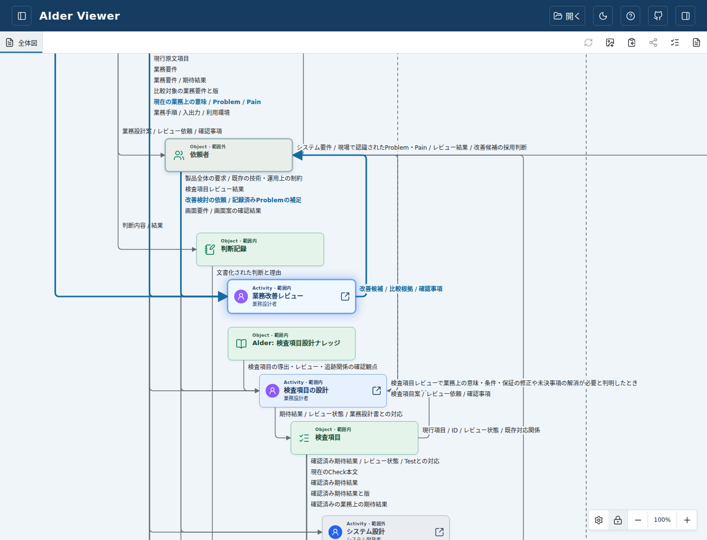
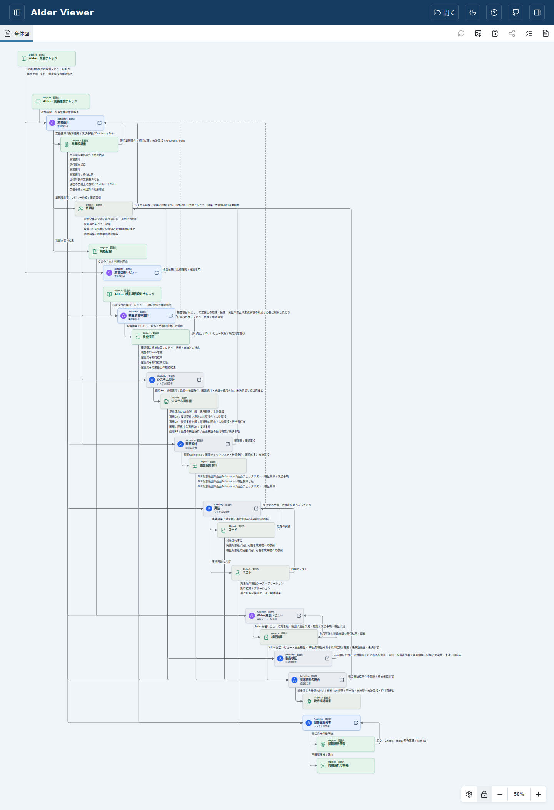
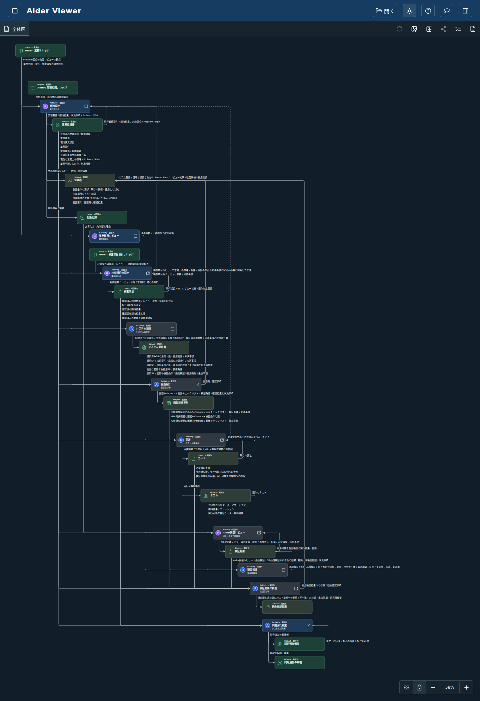

版 c407b3c6c2547bf3ba62117b287e192a91d6fde6。Activityの順序を骨格にObjectを挿入し、通り道・説明領域をマトリックスで確保してから座標化しています。通常線は固定L字、例外・循環は右側の折り返しです。
配置の方向を確認するための試作です。詳細な回帰検証・旧期待値の更新は後回しにしています。既存の保存座標は移行しません。旧配置が出る場合は表示設定から「レイアウトを初期値に戻す」を実行してください。本人GUI採否前のマージ・リリースは行いません。
標準文書では25ノード・63配線（通常49、戻り14）。基本表示・保存再読込とbuildを確認しました。説明を始点側で縦に並べるため、共有Object付近に広い縦余白が生じています。任意の文書・手動配置での完成品質は未検証です。


